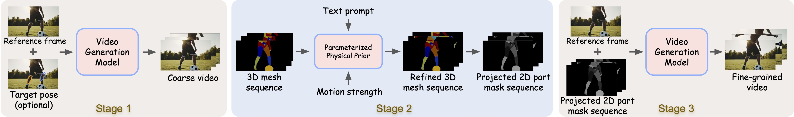
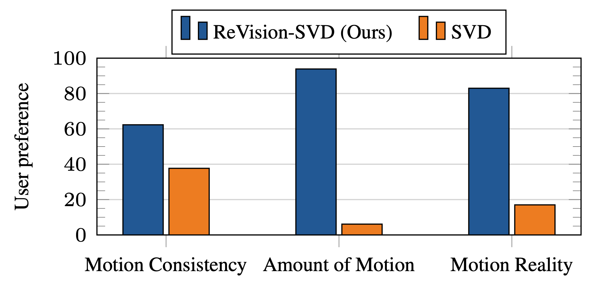
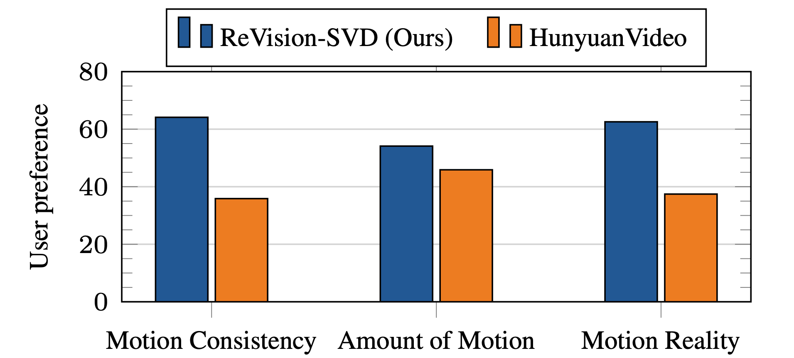

ReVision: Refining Video Diffusion with Explicit 3D Motion Modeling
| TMLR 2026 |
| 1 Johns Hopkins University | 2 Independent Researcher | § equal advising |
| [Paper] [BibTeX] |
| ReVision enables a pretrained video diffusion model, such as Stable Video Diffusion (SVD), to generate high-quality videos with complex motions and interactions. It does so by explicitly optimizing the 3D motion information in the generated video. |
| SVD | SVD + ReVision |
| SVD | SVD + ReVision |
| SVD | SVD + ReVision |
| SVD | SVD + ReVision |
| SVD | SVD + ReVision |
| SVD | SVD + ReVision |
| ReVision also allows precise control over small human/animal parts. |
| eyes | hands and mouth |
| arms | arms |
Abstract
In recent years, video generation has seen significant advancements. However, challenges still persist in generating complex motions and interactions. To address these challenges, we introduce ReVision, a plug-and-play framework that explicitly integrates parameterized 3D physical knowledge into a pretrained conditional video generation model, significantly enhancing its ability to generate high-quality videos with complex motion and interactions. Specifically, ReVision consists of three stages. First, a video diffusion model is used to generate a coarse video. Next, we extract a set of 2D and 3D features from the coarse video to construct a 3D object-centric representation, which is then refined by our proposed parameterized physical prior model to produce an accurate 3D motion sequence. Finally, this refined motion sequence is fed back into the same video diffusion model as additional conditioning, enabling the generation of motion-consistent videos, even in scenarios involving complex actions and interactions. We validate the effectiveness of our approach on Stable Video Diffusion, where ReVision significantly improves motion fidelity and coherence. Remarkably, with only 1.5B parameters, it even outperforms a state-of-the-art video generation model with over 13B parameters on complex video generation by a substantial margin. Our results suggest that, by incorporating 3D physical knowledge, even a relatively small video diffusion model can generate complex motions and interactions with greater realism and controllability, offering a promising solution for physically plausible video generation.
Method

Given the motion-conditioned video generation model, ReVision operates in three stages. Stage 1: A coarse video is generated based on the provided conditions (e.g., target pose, marked in blue, indicating the rough position of the yellow part in the last frame). Stage 2: 3D features from the generated coarse video are extracted and optimized using the proposed Parameterized Physical Prior Mode (PPPM). Stage 3: The optimized 3D sequences are used to regenerate the video with enhanced motion consistency. For a pretrained video diffusion model like SVD, we can adapt it into a motion-conditioned video generation model by simply concatenating two additional conditioning channels to the original noise input. This modification only requires updating the initial convolutional block.
User Perference Study
We conducted a user preference study comparing our model against SVD and HunyuanVideo on 5,000 generated video pairs, evaluating video and motion quality on Amazon MTurk. Our model significantly improves SVD’s motion generation capabilities, producing videos with much better motion quantity, consistency, and reality. Moreover, it outperforms HunyuanVideo, a state-of-the-art video generation model with 13B parameters, in motion quality.


Bibtex